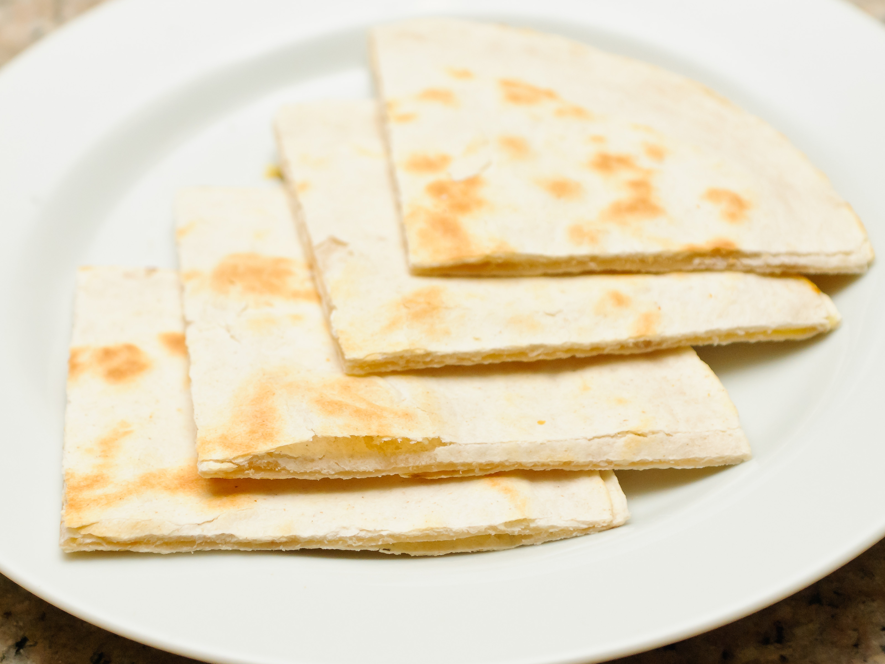

Quesadilla

Flamin' hot quesadillas!
Easy quesadillas with a dash of tabasco sauce. Simple and minimal.
Ingredients
- 2 flour tortillas
- Shredded cheese
- Tabasco sauce
Steps
- Heat one tortilla on a pan with low-medium heat for a minute
- Sprinkle as much cheese as desired onto the tortilla
- Add a few (or many) drops of tabasco sauce over the cheese
- Place another tortilla over the cheese
- Let cook until cheese begins to melt slightly
- Flip quesadilla so that the other tortilla is on the bottom
- Cook until both sides are slightly crisped and cheese is melted